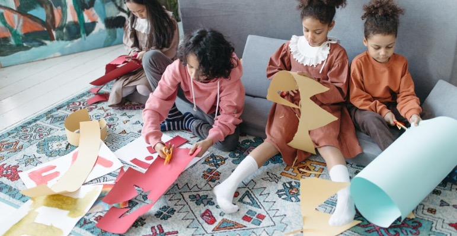

Featured
Building Bridges: How Arts4Us is Transforming Mental Health Support
An in-depth look at our latest research findings and how place-based arts initiatives are making a real difference in the lives of young people across the Northwest.
Read Full Article →